Сезон 01
Весна
Начало, свежесть, чувствительность, первые формулировки о себе.
01 — Лаборатория феминности
Пространство, где женский опыт исследуется через психологию, искусство и миф.
Феминность не существует в единственном числе. Она складывается из образов, ролей, противоречий, телесных ощущений и личных историй.
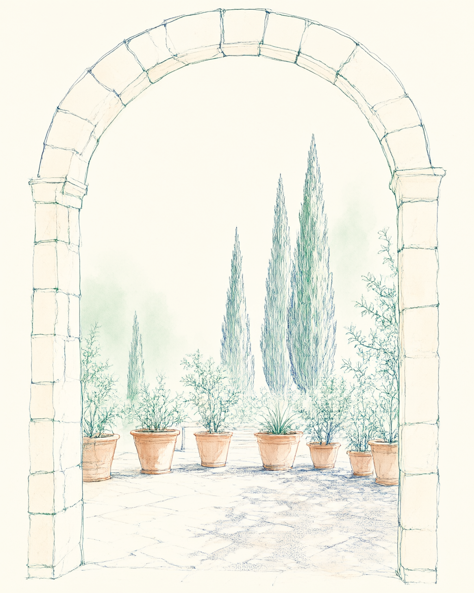
02 — Феминность
Она складывается из разных образов, ролей, противоречий, телесных ощущений, семейных историй, культуры и личного выбора.
Нам интересно исследовать феминность не как идеал и не как набор правил, а как живой опыт: то, как женщины чувствуют, выбирают, любят, устают, создают, заботятся, меняются и говорят о себе.
Феминность похожа на сад: в ней есть весна и зрелость, свет и тень, нежность и сила, память и новые побеги. Лаборатория — место, где этот сад можно рассматривать без спешки и оценки.
Феминность не одна — она складывается из множества личных историй.
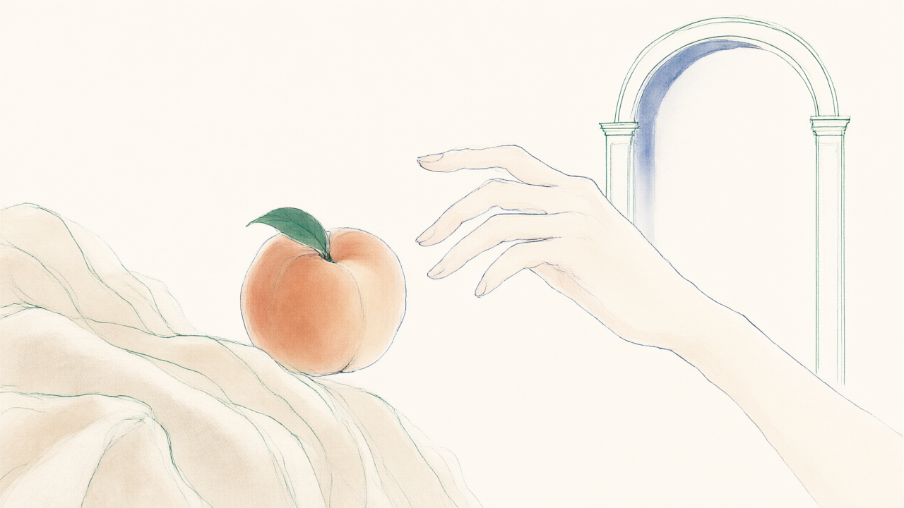
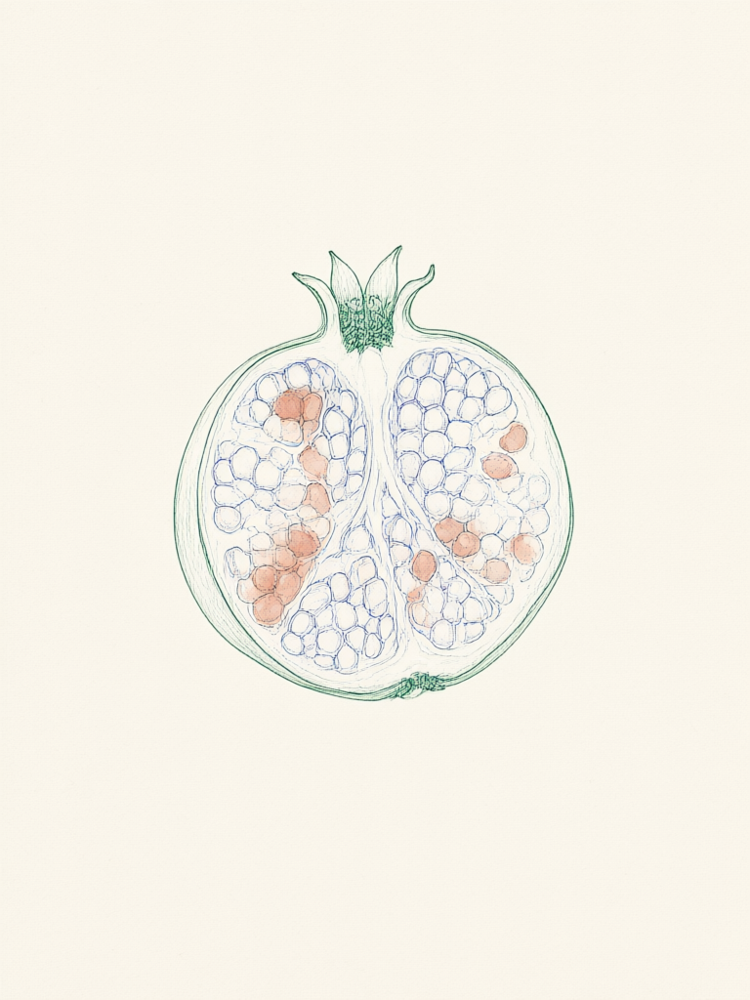
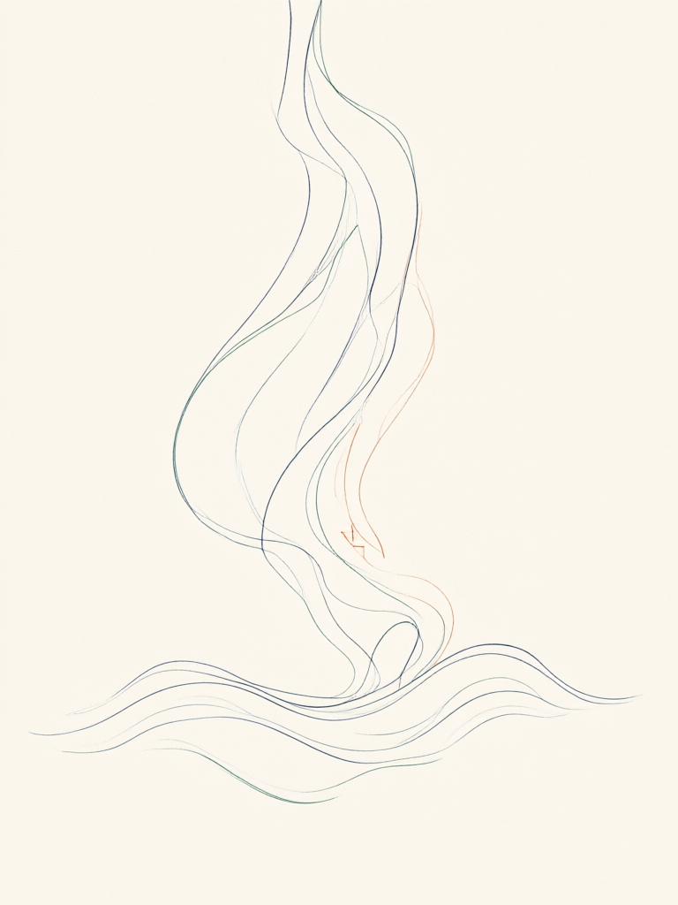
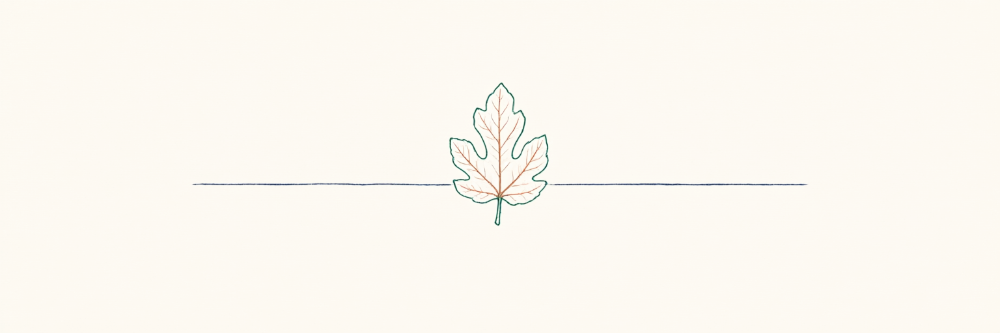
Начало, свежесть, чувствительность, первые формулировки о себе.
Полнота, присутствие, сочность, способность выдерживать свою силу.
Плоды, опыт, глубина, переходы и умение отпускать.
Тишина, пауза, внутренний мир, право на замедление.
03 — Наша оптика
Мы соединяем аналитическую психологию, арт-терапию, сказкотерапию и работу с культурными образами. Это не один метод, а бережная междисциплинарная оптика: она помогает не только говорить о переживаниях, но и давать им форму — через образ, историю, движение, рисунок и слово.
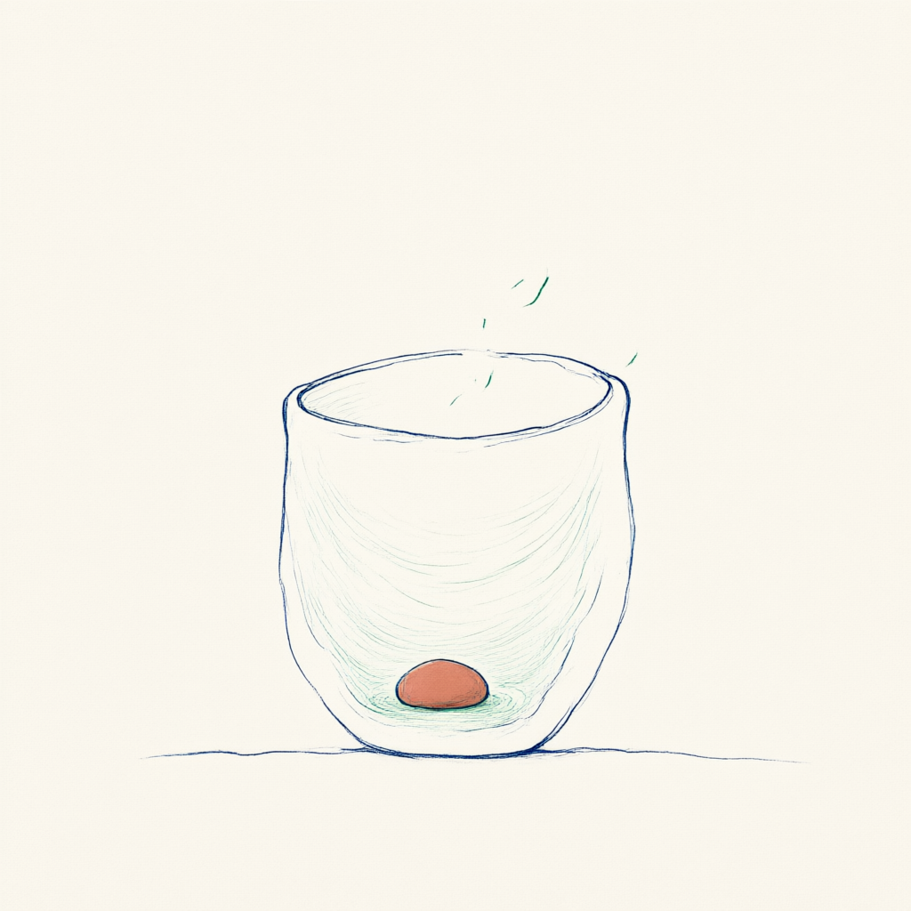
Опираемся на аналитическую психологию и бережное внимание к внутренним процессам: образам, снам, конфликтам, опорам и бессознательным сюжетам.
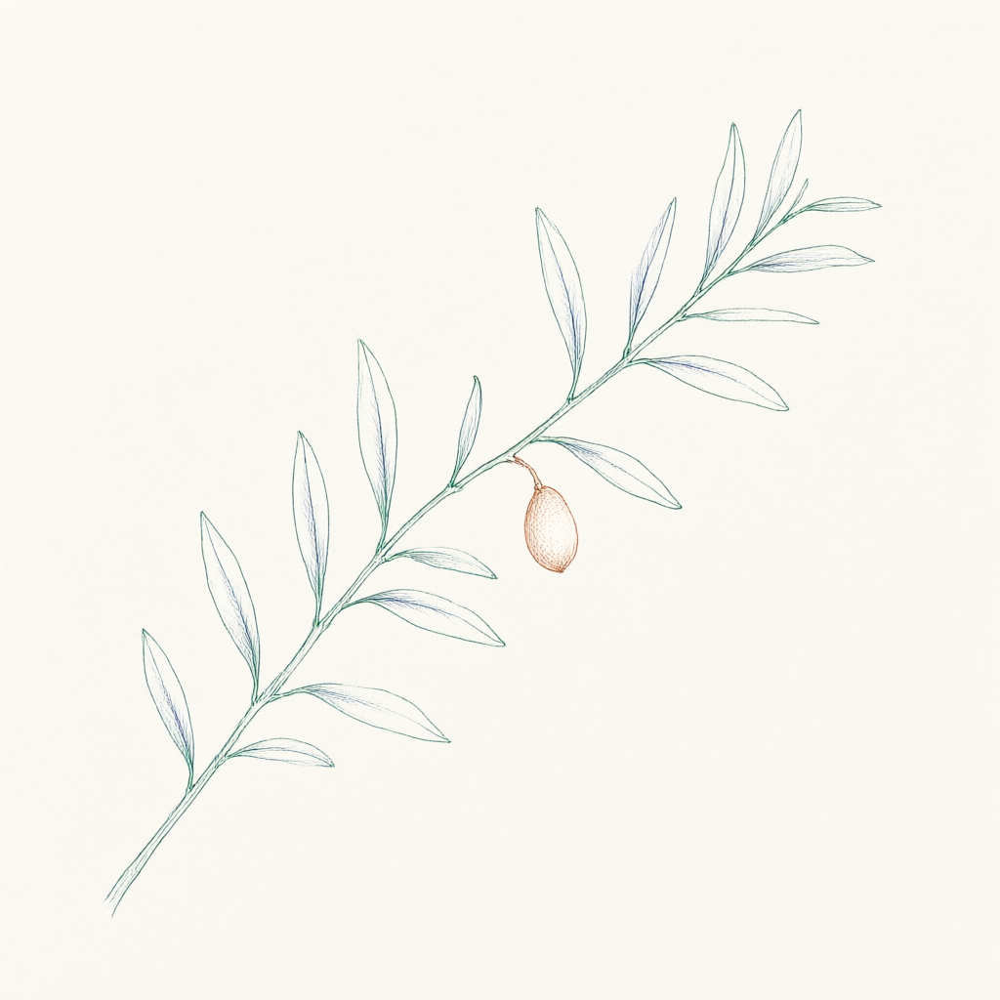
Работаем с мифом и сказкой как с пространством, в котором можно увидеть собственные сюжеты — как метафоры и культурные образы, а не как ярлыки.
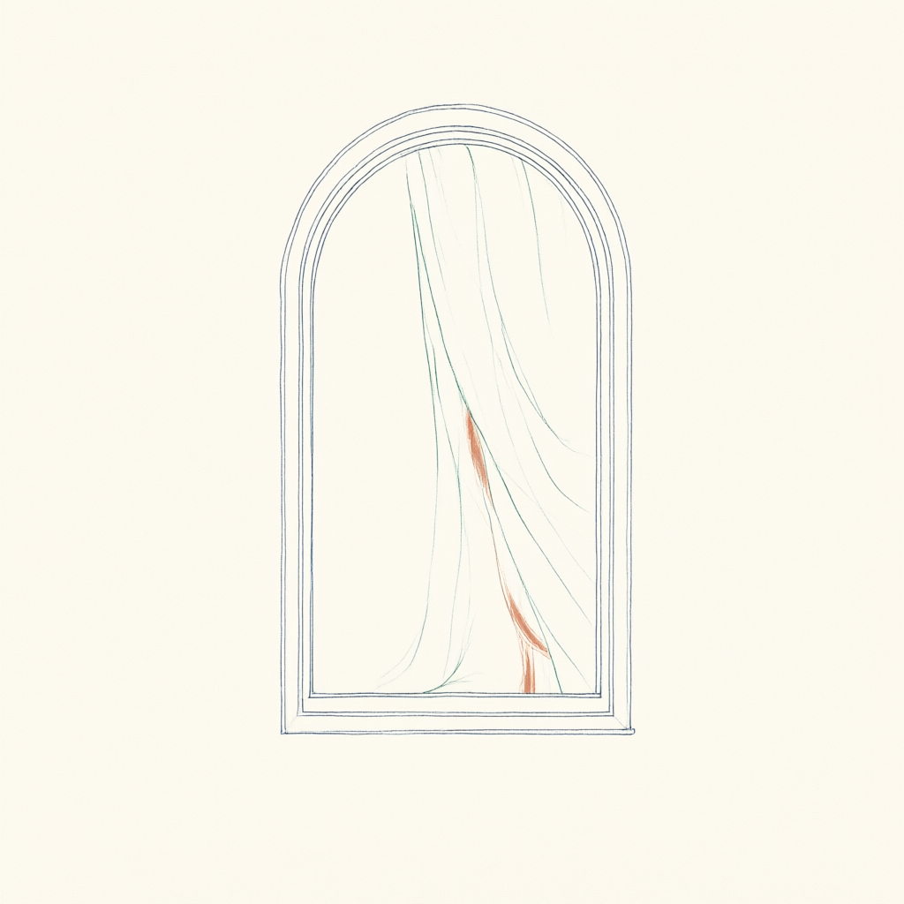
Используем арт-практики и визуальные образы, чтобы дать опыту форму, цвет и голос: рисунок, коллаж, работа с материалом и фрагментами живописи.
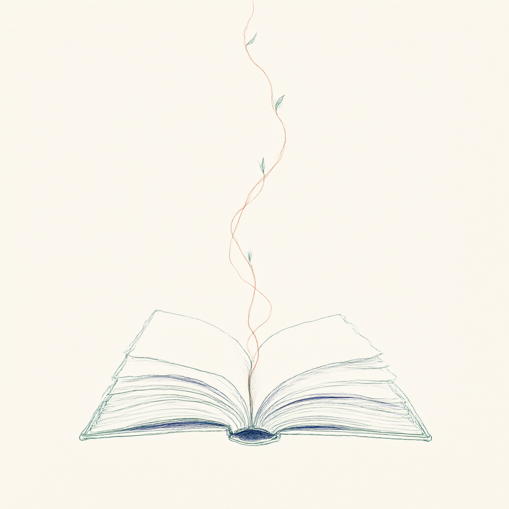
Создаём пространство, где личные истории, телесные ощущения и отношения становятся материалом для исследования и взаимной поддержки.
Архетипы и мифологические сюжеты мы используем как язык метафоры и культурный контекст — не как гороскоп, не как предсказание и не как жёсткую характеристику человека.
04 — Для кого
Пространство Лаборатории может подойти, если вам близко внимательное исследование себя — без оценки, спешки и ожиданий «правильного» результата.
Как мы строим близость, где теряем себя и какие сценарии повторяем.
Бережный контакт с телесностью, усталостью, удовольствием и границами.
Что хочется делать на самом деле — без достигаторства и сравнения с другими.
Сны, фантазии, повторяющиеся метафоры и персонажи внутренней жизни.
Переезды, расставания, материнство, потеря, новый этап — всё, что меняет опору.
Не как про дисциплину, а как про внимание, восстановление и уважение к своему ритму.
05 — О нас
Проект ведут два психолога с разным, но дополняющим друг друга опытом: клиническая психология и терапия экспрессивными искусствами — с одной стороны, дизайн, арт-терапия и аналитическая психология — с другой.
Основа практики — аналитическая психология и терапия экспрессивными искусствами. Полина соединяет психологическую глубину с вниманием к образу, телу и творческому процессу.
Вероника соединяет визуальное мышление, арт-терапию и аналитическую психологию. Её оптика — внимание к образу, символу, форме и внутреннему миру человека.
06 — Встречи
Каждая программа — отдельное исследование со своей темой, образами и длительностью. Страницы тренингов открываются в новой вкладке.
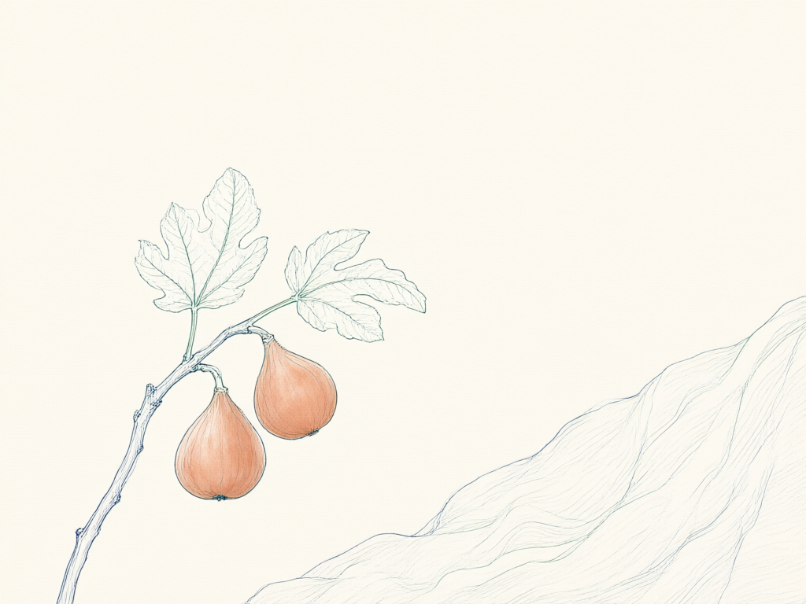
Исследование отношений с телом через образы, движение и творческие практики. Программа подойдёт тем, кто хочет бережно восстановить контакт с собой.
Тело часто оказывается последним, до чего доходит внимание. На встрече мы возвращаемся к телесным ощущениям через образы сада: что в нас цветёт, что плодоносит, что просит покоя и тени.
Женщинам, которым важно бережно восстановить контакт с телом после периодов нагрузки, перемен или отчуждения. Художественные навыки не нужны.
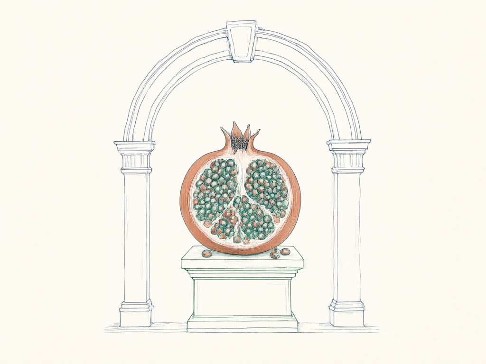
Четыре встречи о мифах, в которых женские образы говорят о переходе, утрате, возвращении и зрелости. Читаем сюжеты и смотрим, что в них откликается лично.
Миф работает как оптика: в чужом сюжете легче разглядеть собственный. Мы берём четыре истории — о спуске и возвращении, о плоде и запрете, о сестринстве, о голосе и молчании — и рассматриваем их как метафоры, а не как инструкции.
Мы не используем архетипы как ярлыки и не предлагаем «свой тип женственности». Миф здесь — язык для разговора о сложном.
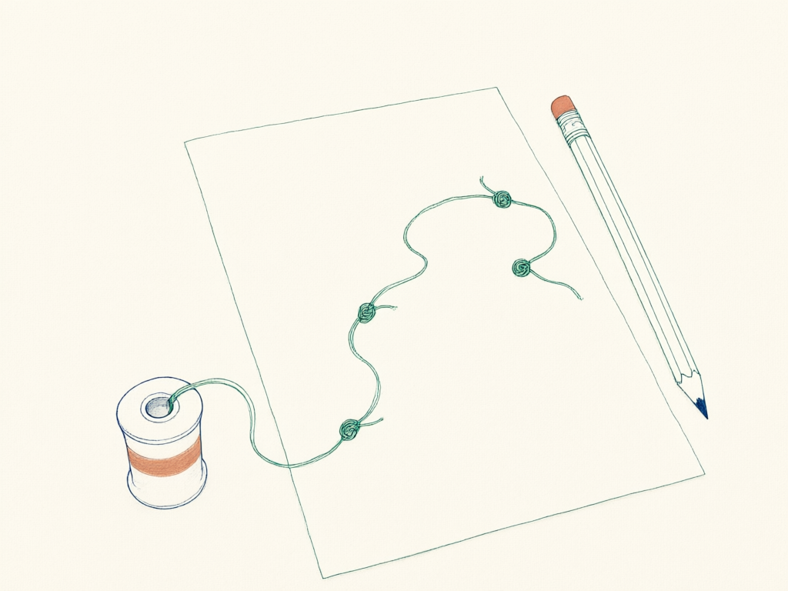
Мастерская о том, как рассказывать свою историю: что мы повторяем, что замалчиваем и какой узор складывается из отдельных эпизодов жизни.
Мы работаем с нарративом: как складывается история жизни, какие главы мы пишем охотно, а какие обходим. Через письмо, работу с предметом и семейными фотографиями проявляется узор — повторяющиеся темы, роли и решения.
Блокнот, удобную одежду и один предмет, с которым связана личная история. Остальные материалы мы przygotowываем.
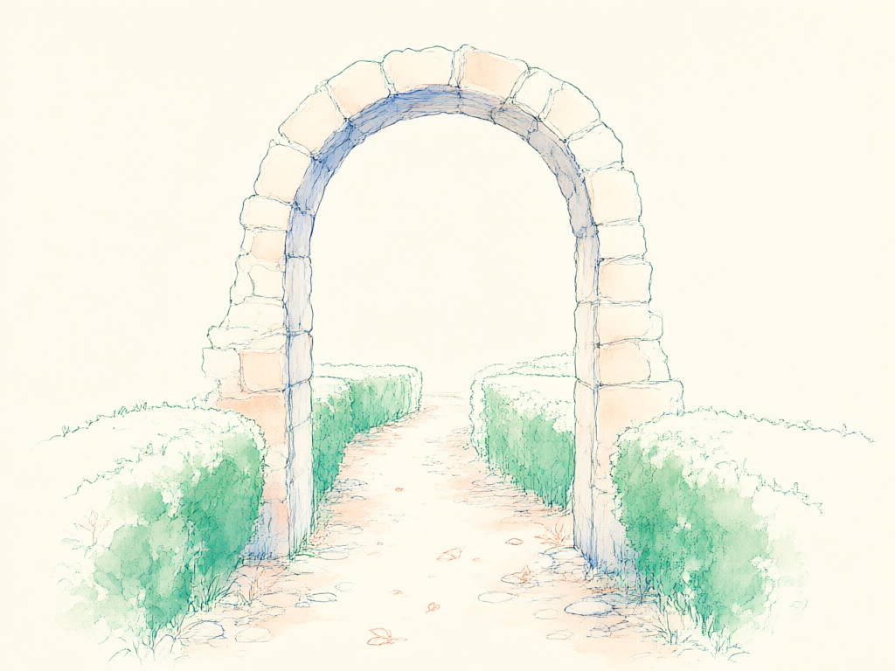
Двухдневная программа о работе, смысле и темпе: что значит «моё», если убрать сравнение, долженствование и чужие сроки.
Призвание здесь — не «единственно верный путь», а направление, которое собирается из интересов, способностей, ограничений и текущих обстоятельств. Мы смотрим, где в вашей работе есть жизнь, а где只剩下 долг и усталость.
Группа набрана. Можно присоединиться к листу ожидания — мы напишем, если освободится место или откроется следующий поток.
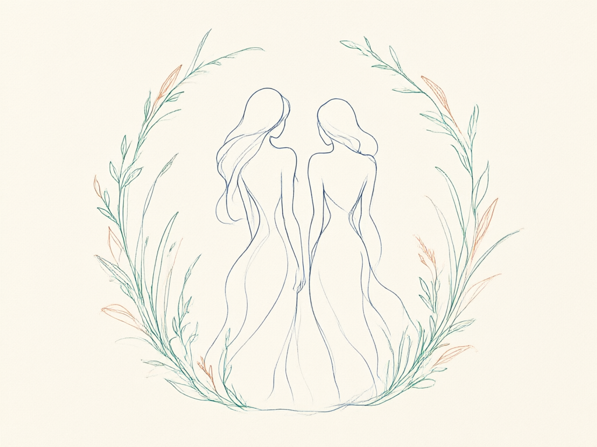
Камерный вечер о внимании к себе и другим: прогулка-наблюдение, работа с образами сада и бережный разговор в кругу.
Встреча прошла в городском саду: мы начали с медленной прогулки-наблюдения, затем работали с собранными материалами — листьями, камнями, тканью — и завершили разговором в кругу.
Формат вернётся осенью в обновлённой версии. Оставьте почту в блоке «Приглашение» — мы напишем о дате.
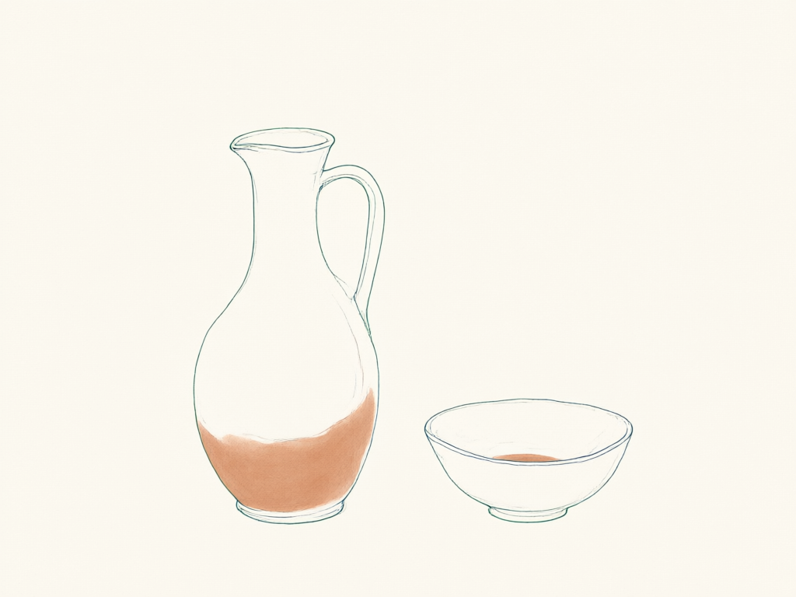
Работа с глиной как способ заметить, как мы держим форму, где сжимаемся и что происходит, когда материал не слушается.
Глина быстро показывает привычные способы обращения с материалом: контролируем, спешим, боимся испортить. Мы лепили простую форму — чашу — и наблюдали, как тело реагирует на ошибку, давление и медленный темп.
Мастерская проводится несколько раз в год. Следующая дата появится в разделе «Встречи» и в письмах Лаборатории.
Показаны все программы. Страницы тренингов открываются отдельно: там указаны даты, стоимость, адрес площадки и форма записи.
07 — Как это происходит
Встречи Лаборатории — это не лекция и не групповая терапия в медицинском смысле. Это организованное пространство, где можно исследовать свой опыт через психологию, творчество и разговор.
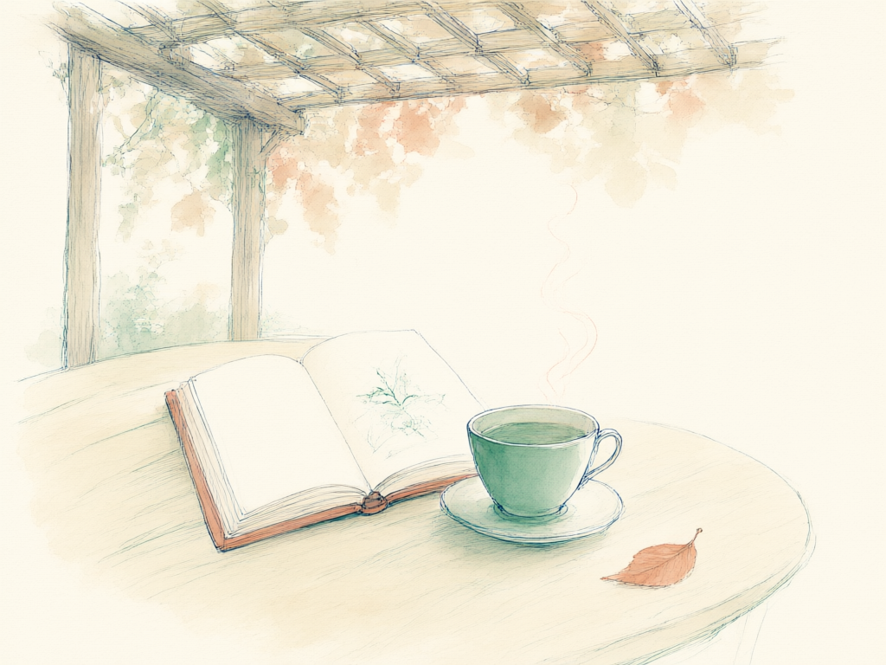
Знакомимся, обозначаем рамки и договариваемся о конфиденциальности. Создаём безопасное пространство.
Работаем с темой через разговор, образ, миф или художественный материал — в зависимости от программы.
Творческие методы: рисунок, письмо, коллаж, работа с материалом, телесными ощущениями и символами.
Делимся откликами в кругу. Говорит тот, кто хочет; слушать тоже достаточно.
Собираем опыт и бережно возвращаемся к повседневности: что забрать с собой, как поддержать себя.
Участие добровольное. Можно быть рядом, не раскрывая больше, чем хочется. Делиться или молчать — одинаково нормально.
Художественные навыки не нужны. Мы не оцениваем результат и не учим рисовать. Важен процесс и то, что в нём проявляется.
Конфиденциальность. Всё, что звучит в кругу, остаётся в круге. Личные истории участниц не используются в материалах проекта.
Практики Лаборатории могут помочь внимательнее отнестись к своему опыту. Они не заменяют индивидуальную психотерапию или медицинскую помощь. Формат конкретной встречи всегда уточняется на странице программы.
08 — Приглашение
Вы можете узнать о ближайшей встрече, подписаться на письма или просто написать нам вопрос. Мы пишем бережно, нечасто и только по делу.
Оставьте почту — пришлём дату ближайшей встречи и новости проекта.
Нужно обсудить вопрос напрямую?
Написать намПартнёрам и площадкам
Лаборатория феминности открыта к сотрудничеству с площадками и сообществами. Мы приносим готовую программу, бережную организацию и внимательное отношение к пространству.
Нам близки места с атмосферой: светлые залы, кафе и клубы, творческие студии, галереи, культурные и ретритные пространства. Если у вас есть площадка, где могут проходить спокойные и эстетичные события, напишите нам.